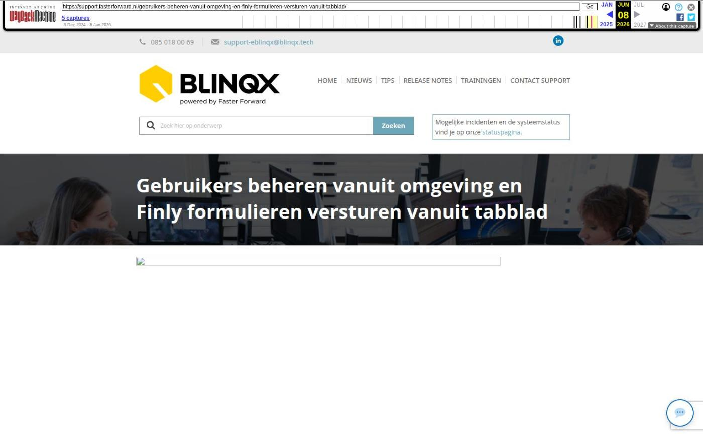

Gebruikers beheren vanuit omgeving en Finly formulieren versturen vanuit tabblad

Tekstinhoud
Op dinsdag 19 november zijn Elements en eBlinqx weer verbeterd en uitgebreid met nieuwe features. Deze release bevat onder andere gebruikers beheren vanuit omgeving en verbetering Finly formulieren.
Gebruikers beheren vanuit omgeving
Finly formulieren versturen vanuit tabblad
Brondata VeiligOphalen voor Adviesbox en FinRust
Nieuwe dekkingen volgens SIVI update
Overige verbeterpunten
Gebruikers beheren vanuit omgeving
Vanaf nu is het mogelijk om nieuwe gebruikers aan te vragen en bestaande gebruikers af te melden vanuit jouw eBlinqx/Elements-omgeving. Je hoeft dan geen formulier meer in te vullen vanaf de website én er is geen telefonische verificatie meer nodig.
Via de module Gebruikeraccounts is het mogelijk om nieuwe gebruikers aan te vragen of gebruikers op te zeggen. Let op: dit is alleen mogelijk voor beheerders/mutatiebevoegden. Vanuit hier vul je het formulier in en verzend je deze naar onze supportafdeling. Het ingevulde formulier wordt verzonden vanuit het e-mailadres die staat ingesteld als standaard e-mailbox onder jouw gebruikersaccount. In de map Verzonden van deze mailbox is het ingevulde formulier terug te vinden. Op de supportafdeling nemen we het verzoek verder in behandeling.
Ben jij bij ons bekend als mutatiebevoegde maar zie je de opties niet terug? Stuur dan een e-mail naar support@fasterforward.nl.
Finly formulieren versturen vanuit tabblad
Het is nu mogelijk om Finly formulieren te versturen vanuit het tabblad Finly Formulieren. Deze is te vinden onder het tabblad Export. Op deze manier hoeven de formulieren niet meer ingericht en verstuurd te worden via de workflow en zijn deze makkelijker te beheren. Via het tabblad kan je een nieuw formulier aanmaken. Ook kan je van het aangemaakte formulier de status, de inhoud en de link zien. Bij het aanmaken van het formulier is het mogelijk om deze aan het juiste product en eventueel aan een schademelding te koppelen. Na het aanmaken verstuur je een e-mail met daarin de link van het formulier naar de klant. De gekozen behandelaar krijgt een taak als het formulier is ingevuld.
Maak je al gebruik van de formulieren in eBlinqx/Elements en wil je via het tabblad werken (let op: de oude werkwijze met workflows wordt dan uitgezet)? Of maak je nog geen gebruik van de formulieren en wil je dit wel? Stuur dan een e-mail naar support@fasterforward.nl
Brondata VeiligOphalen voor Adviesbox en FinRust
Vanaf 7 november is het mogelijk om gebruik te maken van de brondata van VeiligOphalen. Vanuit het tabblad Adviesbox kan je een HBX-bestand genereren met als bron VeiligOphalen. Zo kan je de brondata van VeiligOphalen gebruiken voor het opstellen van het advies in Adviesbox. Via het tabblad Brondata kan je de brondata downloaden. Dit gedownloade bestand kan je vervolgens uploaden in Finrust om vanuit daar een rapport op te stellen voor de klant.
Nieuwe dekkingen volgens SIVI update
Als via ADN en Aplaza berichten binnenkomen, worden de nieuwste, bijbehorende dekkingen en/of soorten documenten aangemaakt. Deze zijn namelijk uitgebreid volgens de SIVI richtlijnen. Hiermee zijn alle te selecteren verzekeringen up-to-date om correct te verwerken in een klantdossier.
Nieuwe dekkingen
5040 Op-/aanbouw brand
5041 Op-/aanbouw alle gevaren
5799 Bedrijfsschade
3012 Annulering uitgebreid
3111 Vervangend vervoer en verblijf (reis)
3117 Huisdieren op reis
3118 Groepsannulering
9224 Rechtsbijstand reis
Overige verbeterpunten
Het versturen van informatie-aanvraagberichten (IA/IX) is uitgebreid met de maatschappijen Obvion, NIBC, Lot, ASR en Triodos
Het toevoegen van een subaccount Office365 is verbeterd. Zodra een hoofdaccount meer dan 100 subaccounts heeft dan is het mogelijk om binnen deze accounts te filteren. Hiervoor komt er een apart zoekveld bij
Wij hebben diverse verbeteringen voor onze interne conversietool doorgevoerd. Hierdoor wordt de doorstroom van de conversies verbeterd
Het verblijfsvergunningstype 'Type Familieleden EU/EER: verblijfsdocument voor familieleden van gemeenschapsonderdaan' is toegevoegd
Geplaatst op 15 november 2024 (Laatste update: 18 november 2024)
Laatste 5 releasenotes
Voorbereidingen op HDN 26 en verbeteringen PortefeuilleSignalen »
Nog meer data en documenten vergelijken »
Gemakkelijk data en documenten vergelijken »
Verbeteringen boekhouding en facturatie »
Verbeteringen gespreksopname en onder de motorkap »